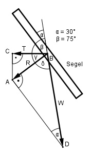

Aufgabe 113 Wie groß ist die vorwärts treibende Kraft T der Windkraft W für das Segelboot? Rechnen Sie auf 4 Stellen.

Im Dreieck ADB: R sin α = --- |*W W R = sin 30° * W = 0,5 * W Im Dreieck ABC: γ = 180° - β – δ δ = 90° - α = 90° - 30° = 60° γ = 180° - 75° - 60° = 45° T cos γ = --- | *R R T = cos 45° * 0,5 * W T = 0,7071 * 0,5 * W T = 0,3536 * W